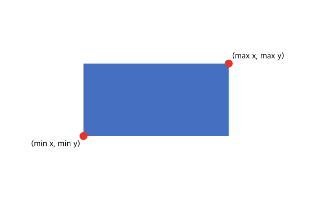
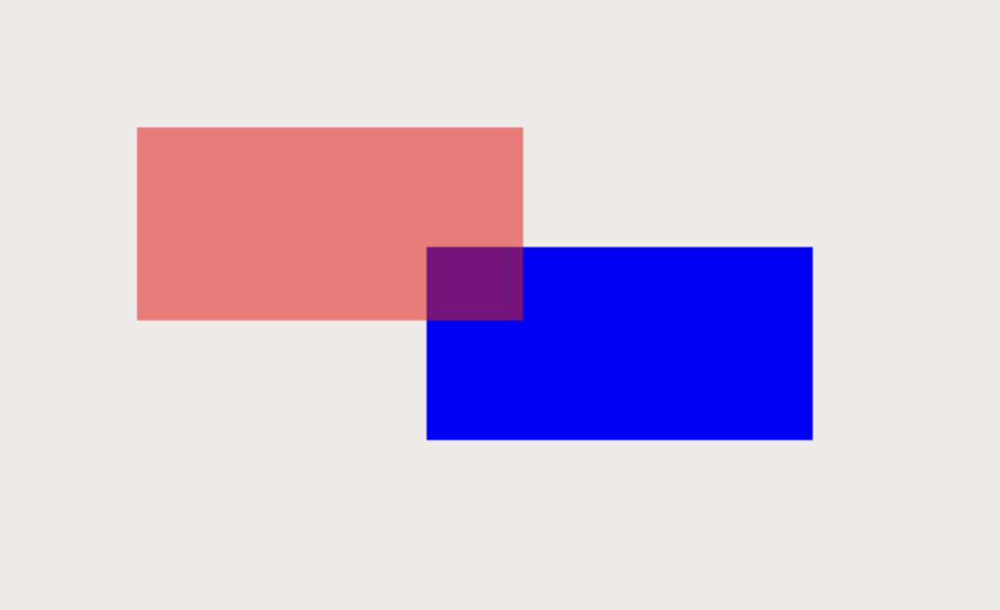
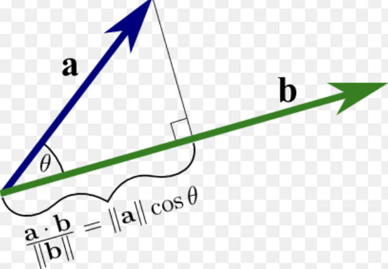

if I throw a ball at a wall, we know a collision with the wall makes the ball bounce back. these collisions don't just occur in real life, they also occur in computer simulations. but we can't just tell the computer, if I walk into a wall, make me bounce back, so how do collisions actually work?
the math behind simulating physics collisions in computer graphics is very interesting and nifty piece of math that I think is extremely underappreciated In the places where these algorithms are used the most(being computer graphics and game engines) many tools just automatically handle the physics logic and the user is uninformed about the underlying math.
but as more and more people start learning about the math for the sake of self made graphics or game engines,I want to try and help others in their research by providing a simple start off point. the goal of the article is to provide is a collection of common algorithms used to simulate the physics of two objects colliding accompanied by images from self built simulation as well as mathmatical explanation for how they work. Hopefully, this helps some people understand what algorithms are available before they go into the more in depth topics of optimization which are also mentioned below along with sources i've found on the topic that are hopefully good.
this algorithm is the most simple but also has applications to larger scale systems in collision optimization in the form of AABB trees(talked on later)
but first, what is an AABB?

An AABB or Axis Alligned Bounding Box refers to objects which are alligned along the same axis and are rectanges defined by two points, the bottom left and top right.
the bottom right and top right gives us the mininum and maximum of the x and the y and filling out the area in between gives us our box or rectangle.(as shown above)
the AABB collision algorithm itself just states that if two of these boxes have an overlap on the x and y Axis then those two boxes are colliding and the collision needs to be resolved.
logically this makes sense. as an overlap on both these axis means a total overlap as seen below.

mathmatically the overlap of two boxes can be determined if the mininum or maximum value of a box on the x or y axis is within the range defined by the min and max of the other on the same axis.
in the example of the mininum x value of a box, we know that there is an overlap if:
The seperating axis theorem takes a bit more understanding of more advanced mathmatics but can also be applied to non rectangular shapes.
The first thing to understand is the dot product, a mathmatical process that produces the the measure by how close two vectors are alligned. For the sake of these algorithms, the dot product represents a projection of one vector onto another.

as we can see above, the dot product represents the closest point on one line to the tip of another line.
another way to understand it is the shadow of a line onto another if a light was shone onto it.
mathmatically, you acheive the dot product through